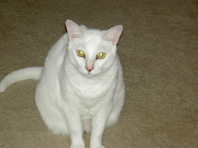
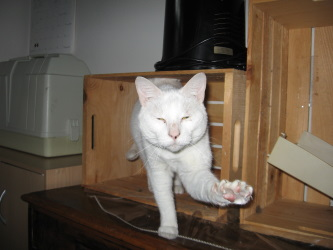
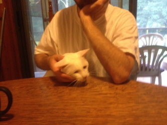
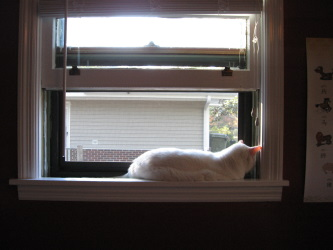

Cat-A-Log Item: Lila
Lila was the second cat we owned. She was a birthday gift for Jenn. However Lila ended up gravitating to me.
As a kitten Lila had a small grey patch on her head. Over time it faded completely. She was loving but had limits. When she was done with you she would swat and move on.
Lila mixed well with the other cats but could only stand so much. She loved her lap time, oblivious to how her hefty feline body would put your legs to sleep.



